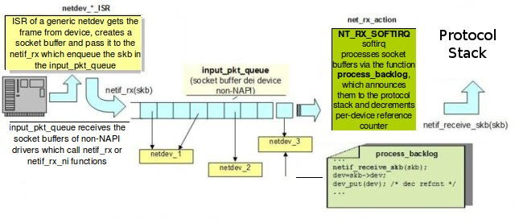
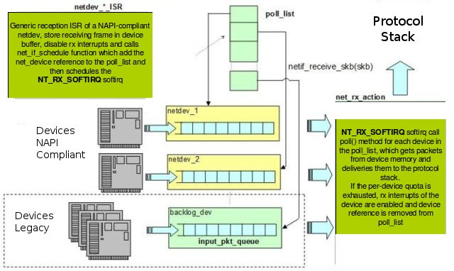
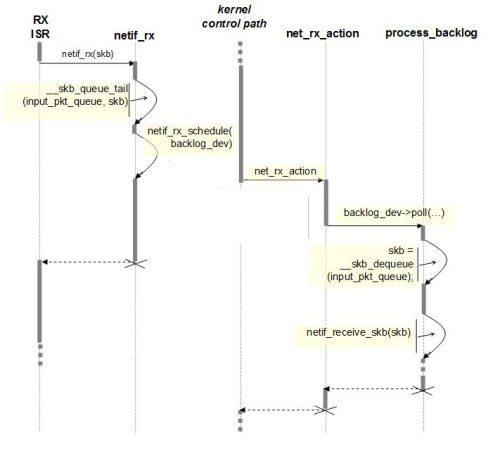
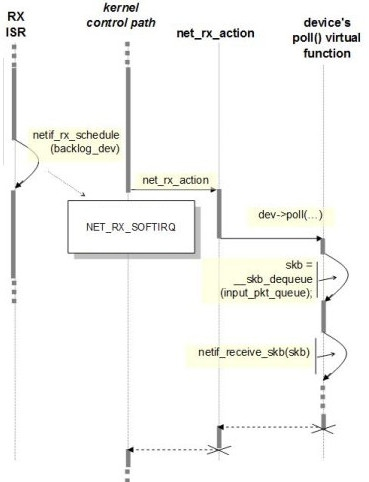

Linux协议栈–NAPI机制
Linux内核中的NAPI机制介绍
本文将介绍Linux内核中的NAPI：Linux网络设备驱动程序中的一种支持新一代网络适配器的架构。
New API（NAPI）用于支持高速网卡处理网络数据包的一种机制 - 例如在Linux 2.6内核版本中引入的千兆以太网卡，后来又被移植到了2.4.x版本中。
以前的网络设备驱动程序架构已经不能适用于每秒产生数千个中断的高速网络设备，并且它可能导致整个系统处于饥饿状态（译者注：饥饿状态的意思是系统忙于处理中断程序，没有时间执行其他程序）。
有些网络设备具有中断合并，或者将多个数据包组合在一起来减少中断请求这种高级功能。
在内核没有使用NAPI来支持这些高级特性之前，这些功能只能全部在设备驱动程序中结合抢占机制（例如基于定时器中断），甚至中断程序范围之外的轮询程序（例如：内核线程，tasklet等）中实现。
正如我们看到的，网络子系统中加入的这个新特性是用于更好的支持中断缓解和数据包限制等功能，更重要的是它允许内核通过round-robin策略将负载分发到不同网络设备上。
NAPI特性的添加不会影响内核的向后兼容性。
非NAPI帧的接收
我们将讨论内核在接收一个数据帧后的大致处理流程，不会详细叙述所有细节。
我们认为有必要先了解一下传统的数据包处理流程以便更好的理解NAPI和传统收包方式的区别。
在传统的收包方式中（如下图1）数据帧向网络协议栈中传递发生在中断上下文（在接收数据帧时）中调用netif_rx的函数中。 这个函数还有一个变体netif_rx_ni，他被用于中断上下文之外。

图1 - Non-NAPI frame receptionnetif_rx函数将网卡中收到的数据包（包装在一个socket buffer中）放到系统中的接收队列中（input_pkt_queue），前提是这个接收队列的长度没有大于netdev_max_backlog。这个参数和另外一些参数可以在/proc文件系统中看到（/proc/sys/net/core文件中，可以手动调整这个数值）。
清单1 - softnet_data结构体的定义：
1 | /* |
如清单1所示，input_pkt_queue是softnet_data结构体中的一个成员，定义在netdevice.h文件中。
如果接收到的数据包没有因为input_pkt_queue队列已满而被丢弃，它会被netif_rx_schedule函数调度给软中断NET_RX_SOFTIRQ处理，netif_rx_schedule函数在netif_rx函数内部被调用。
软中断NET_RX_SOFTIRQ的处理逻辑在net_rx_action函数中实现。
此时，我们可以说此函数将数据包从input_pkt_queue队列中传递给了网络协议栈，现在数据包可以被处理了。
NAPI帧的接收
在NAPI架构中（如图2），当接收到数据包产生中断时，驱动程序会通知网络子系统有新的数据包到来（而不是立即处理数据包），这样就可以在ISR（Interrupt Service Routines - 中断服务程序）上下文之外使用轮询的方式来一次性接收多个数据包。

图2 - NAPI frame reception
因此网卡支持NAPI必须满足几个条件：驱动程序不再使用数据包接收队列，网卡本身需要维护一个缓冲区来保存接收到数据包，并且可以禁止中断。
这种方法减少了中断的产生并且在突发情况下减少了丢包的可能性，避免了接收队列的饱和。
从NAPI实现的角度来看，与传统收包方式的不同地方在中断程序和轮询函数上（在net_device结构体中定义），定义如下：
1 | int (*poll)(struct net_device *dev, int *budget); |
除此之外，net_device结构体中还有另外两个属性quota和weight，他们用于在一个轮询周期中实现抢占机制（译者注：意思是通过这两个参数来控制一个轮询周期的运行时间）我们将在后面详细讨论。
NAPI模型中的中断函数将数据帧传送到协议栈的任务交给poll函数执行。 换句话说中断函数的工作被简化为禁用网络设备中断（再此期间设备可以继续接收数据帧），和确认中断然后调度（通过netif_rx_schedule函数调度）软中断NET_RX_SOFTIRQ关联的net_rx_action函数。
等待被轮询的设备通过netif_rx_schedule函数将net_device结构体实例的指针加入到poll_list链表中。 在调用net_rx_action函数执行软中断NET_RX_SOFTIRQ时会遍历poll_list链表，然后调用每个设备的poll()函数将数据帧存放在socket buffers中并通知上层协议栈。
net_rx_action函数的执行步骤如下：
- 回收当前处理器的
poll_list链表的引用。 - 将
jiffies的值保存在start_time变量中。 - 设置轮询的
budget（预算，可处理的数据包数量）为netdev_budget变量的初始值（这个值可以通过/proc/sys/net/core/netdev_budget来配置） - 轮询
poll_list链表中的每个设备，直到你的budget用完，当你的运行时间还没有超过一个jiffies时:
a) 如果quantum（配额）为正值则调用设备的poll()函数，否则将weight的值加到quantum中，将设备放回poll_list链表；
a.1) 如果poll()函数返回一个非零值，将weight的值设置到quantum中然后将设备放回poll_list链表；
a.2) 如果poll()函数返回零值，说明设备已经被移除poll_list链表（不再处于轮询状态）。
budget的值和net_device结构体的指针会传递到poll()函数中。poll()函数应该根据数据帧的处理数量来减小budget的值。数据帧从网络设备的缓冲区中复制出来包装在socket buffers中，然后通过netif_receive_skb函数传递到协议栈中去。
抢占策略是依赖budget变量的配额机制实现的：poll()函数必须根据分配给设备的最大配额来决定可以传递多少个数据包给内核。 当配额使用完就不允许在传递数据包给内核了，应该轮询poll_list链表中的下一个设备了。因此poll()必须和减小budget的值一样根据数据帧的处理数量来减小quota的值。
如果驱动在用完了所有的quota之后还没有传递完队列中所有的数据包，poll()函数必须停止运行并返回一个非NULL值。
如果所有数据包都传递到了协议栈，驱动程序必须再次使能设备的中断并停止轮询，然后调用netif_rx_complete函数（它会将设备从poll_list链表去除），最后停止运行并返回零值给调用者（net_rx_action函数）。
net_device结构体中的另一个重要成员weight，它用于每次调用poll()函数时重置quota的值。 很明显weight的值必须被初始化为一个固定的正值。通常对于高速网卡这个值一般在16和32之间，对于千兆网卡来说这个值会大一点（通常时64）。
从net_rx_action函数的实现中我们可以看到当weight的值设置太大时，驱动使用的budget会超过quantum，此时会导致一个轮询周期的时间变长。
在清单 2中我们给出了设备驱动程序接收中断并执行轮询函数的伪代码：
1 | static irqreturn_t sample_netdev_intr(int irq, void *dev) |
图3、图4分别展示了非NAPI和NAPI模型中数据包接收处理过程的时序图：

图3 - 非NAPI模型的时序图

图4 - NAPI模型的时序图